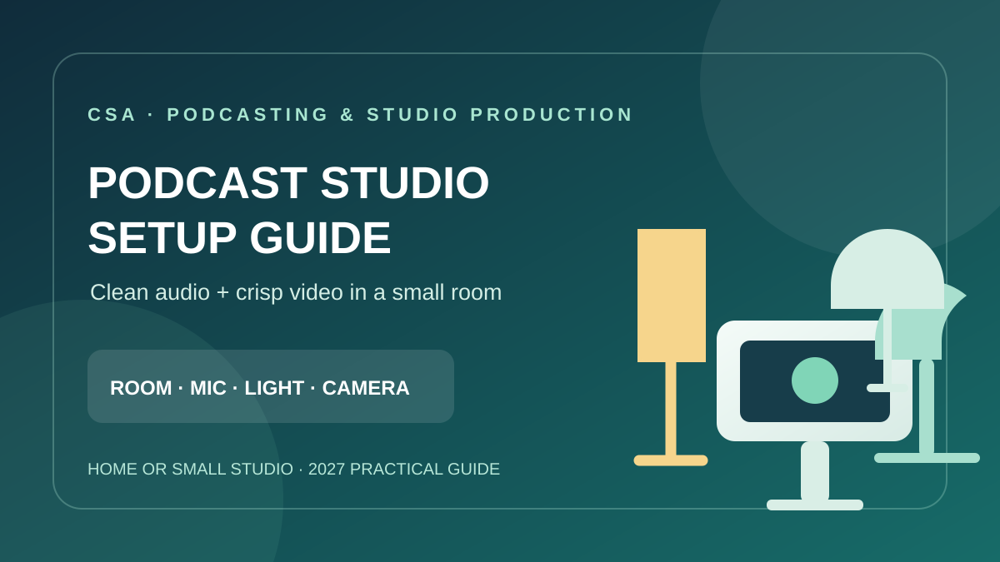
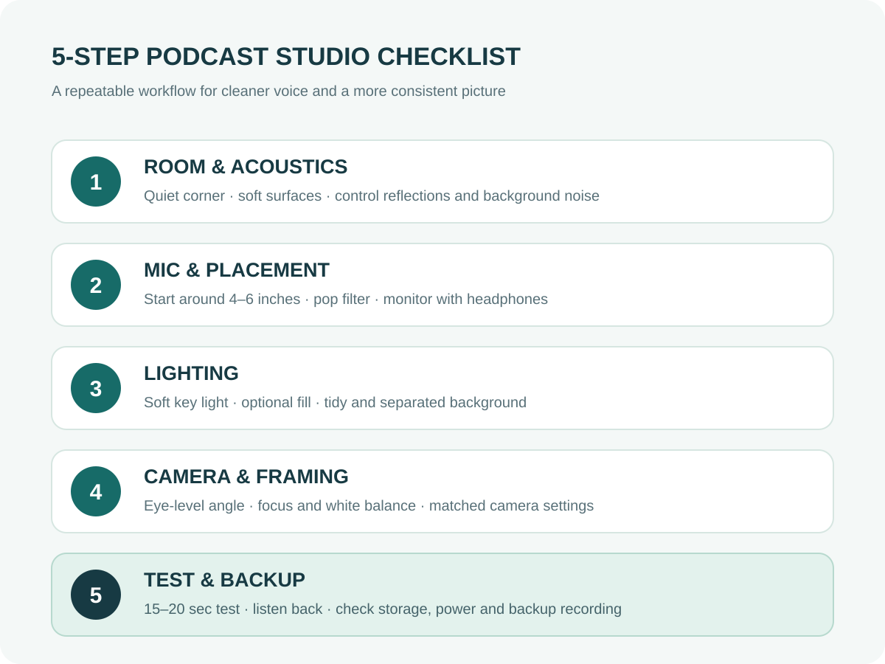

Podcast Studio Setup: Ghar Ya Chhote Studio Mein Clean Audio Aur Video Kaise Banayein? (2027 Guide)
Podcast aur talking-head videos ke liye bada studio hona zaroori nahi. Ek quiet room, sahi microphone placement, controlled lighting aur repeatable recording routine se aap professional-looking aur comfortable-to-listen content ki shuruaat kar sakte hain. Is guide mein hum practical setup ko step by step samjhenge.

- Podcast mein audio aur video ka sahi balance
- Ghar ya chhote studio mein setup ke 5 practical steps
- Home/small room aur dedicated studio ka comparison
- Recording aur editing ki 4 common galtiyan
- Frequently asked questions
1. Podcast Mein Audio Aur Video Ka Sahi Balance Kya Hai?
Achha podcast sirf camera par record ki gayi conversation nahi hota. Listener ko voice natural, intelligible aur consistent sunai deni chahiye; video dekhne wale ko host, guest aur setting clearly samajh aani chahiye.
- Audio first: Bahut se log podcast ko commute, walk ya kaam ke dauran sunte hain. Room echo, mic se zyada doori ya uneven volume listening experience ko disturb kar sakta hai.
- Clean video: YouTube par expressions, eye-line, framing aur balanced light conversation ko samajhne mein madad karte hain. Background ko simple aur intentional rakhein.
- Consistency over complexity: Aisa setup chunein jo har episode mein repeat ho sake. Complex gear tabhi add karein jab actual production need ho.
2. Ghar Ya Chhote Studio Mein Podcast Setup Ke 5 Practical Steps
Step 1: Sahi Kamra Aur Acoustic Control (Echo Kam Karein)
Bade, khali aur hard-surface wale room mein voice reflections zyada sunai de sakte hain. Pehle aisa room ya corner choose karein jahan traffic, road noise aur household interruptions kam hon.
- Curtains, rugs, sofa, cushions aur bookshelves jaise soft/irregular surfaces reflections ko reduce karne mein help kar sakte hain.
- Mic ke aas-paas ka immediate environment treat karein; sirf decorative foam lagane se poora room soundproof nahi hota.
- AC, fan, refrigerator aur window noise ko record test mein sun kar decide karein. Soundproofing aur acoustic treatment alag cheezein hain.
Step 2: Mic Selection Aur Distance Ka Dhyan
Mic quality ke saath placement aur gain bhi matter karte hain. Dynamic mic untreated ya moderately noisy room mein practical ho sakta hai, lekin koi bhi mic poor placement ko magically fix nahi karta.
- Ek speaker ke liye mic ko aam taur par 4–6 inch ke aas-paas se start karein; exact distance mic design, speaking volume aur plosive control par depend karegi.
- Pop filter ya windscreen use karein aur mic ko mouth ke bilkul saamne hawa ke direct blast se thoda off-axis rakhein.
- Host aur guest ke liye alag microphones aur separate tracks rakhna behtar control deta hai. Ek mic se door baith kar do log record karne par levels uneven ho sakte hain.
Step 3: Key Light, Fill Aur Background Separation
Camera ko achhi image banane ke liye sufficient, soft aur consistent light chahiye. Subject ke saamne thode angle par diffused key light rakhein. Zaroorat ho toh opposite side par low-intensity fill ya reflector use karein.
- Light ko diffuser/softbox se soften karein; bare, harsh light se face par hard shadows aa sakti hain.
- Background ko subject se thoda alag rakhein; subtle background light optional hai, mandatory nahi.
- Window light use kar rahe hain toh shoot ke dauran changing sunlight se exposure aur colour shift ho sakta hai—curtain ya consistent artificial light se control karein.
Step 4: Camera Framing Aur Multi-Angle Planning
Single camera se bhi strong episode ban sakta hai. Camera ko eye-level ke aas-paas rakhein, headroom balanced chhodein aur host/guest ko comfortable frame dein.
- White balance, exposure aur focus ko lock ya manually match karein jahan camera allow karta ho.
- Two-camera conversation mein wide master shot aur alternate close angles useful ho sakte hain. Dono cameras ka colour temperature aur exposure match karein.
- Frame mein mic visible rehna acceptable hai; use face ko cover na karne dein. Background distractions aur clutter hata dein.
Step 5: Pre-Record Test Aur Clean Backup
Har episode se pehle 15–20 second ka test record karein aur headphones par playback sun kar voice, noise, clipping, focus aur framing check karein.
- Phone silent/airplane mode par rakhein, notifications band karein aur room noise check karein.
- Battery, memory card/storage aur available recording time confirm karein. Long sessions ke liye power aur storage backup plan rakhein.
- Audio ko headphones se monitor karein; sirf camera meters dekh kar assume na karein ki recording clean hai.
- Possible ho toh separate audio recorder ya second recording path rakhein, phir sync/clap marker use karein.

3. Home / Small Room Setup vs. Dedicated Studio Setup
| Setup Aspect | Home / Small Room Setup | Dedicated Studio Setup |
|---|---|---|
| Space & Readiness | Har shoot se pehle set, lights aur cables arrange karne pad sakte hain | Ready-to-shoot lighting, framing aur acoustic arrangement ho sakta hai |
| Audio Consistency | Room noise aur surrounding activity par zyada depend | Controlled environment aur repeatable mic setup maintain karna aasaan |
| Guest Experience | Limited seating ya home environment | Dedicated seating aur focused interview space |
| Best Fit | Solo creators, beginners aur occasional recordings | Regular podcasts, interviews, educators aur brands |
Dedicated studio automatically better content guarantee nahi karta. Host preparation, topic relevance, sound checks aur editing discipline dono setups mein equally important hain.
4. Podcast Setup Aur Production Ki 4 Common Galtiyan
- Sirf camera par budget lagana, audio ko bhool jana: High-resolution camera unclear voice ko fix nahi kar sakta. Pehle intelligible speech aur stable levels par dhyan dein.
- Bina sound check ke long episode record karna: Gain bahut high ho toh clipping aur bahut low ho toh noise floor problem ban sakti hai. Test playback zaroor karein.
- Bina structure ke baat shuru karna: Episode ka rough flow, key questions aur closing points pehle likhne se conversation focused rehti hai; natural discussion ke liye flexibility bhi rakhein.
- Raw footage ko repurpose na karna: Ek long episode se relevant short clips, key quotes aur written summary ban sakti hai—lekin har clip ko context ke saath edit karein.
5. Simple Pre-Recording Checklist
- Room noise aur echo test kiya
- Mic distance, pop filter aur gain check kiya
- Headphones par test recording suni
- Key light aur background exposure set kiya
- Camera framing, focus aur white balance check kiya
- Battery, storage aur backup recording confirm ki
- Episode outline aur guest consent/permissions ready hain
Aksar Puche Jaane Wale Sawal (FAQs)
1. Kya chhote kamre mein bhi achha podcast record ho sakta hai?
Haan. Chhota room bade khali room se kabhi-kabhi easier control ho sakta hai. Soft surfaces se reflections kam karein, mic ko suitable distance par rakhein aur noise test karein.
2. Shuruat mein single camera se podcast banana sahi hai ya two cameras se?
Solo creator ya limited budget ke liye ek camera aur clear audio se shuruaat practical hai. Jab two-person interviews regular hon, tab second angle conversation ko visually dynamic bana sakta hai.
3. Podcast episode ki ideal length kya honi chahiye?
Koi universal fixed length nahi. Topic aur audience ke hisaab se focused episode banayein. 15–45 minute ek possible planning range hai, lekin value aur pacing duration se zyada important hain.
4. Kya podcast recording, editing aur short clips ke liye production support liya ja sakta hai?
Haan. Recording setup, multi-camera editing, audio cleanup, thumbnails aur short-form clips ke liye dedicated production support liya ja sakta hai. Scope aur deliverables pehle clear kar lena chahiye.
Useful Tools & Resources
- Creator Packaging Kit: Podcast titles, descriptions aur social captions ke liye Creator Packaging Kit dekhein.
- Studio, Editing & Design Services: Recording, video editing, thumbnails aur production support ke liye CSA Services dekhein.
- Studio Booking & Consultation: Shoot planning aur consultation ke liye Creator Support Amravati se sampark karein.
Suggested & Related Articles
- 2027 Ke Liye Indian Creators Aur Businesses Ka Complete Growth Blueprint — retention, packaging aur multi-platform growth.
- Normal Room Mein Crisp Studio-Quality Podcast Audio Kaise Record Karein — room treatment aur microphone technique.
- Podcast Video Editing Guide — long-form episode ko clean edit karne ka workflow.
- YouTube Thumbnail CTR Kaise Badhayein? — podcast aur video thumbnails ke design rules.
Helpful Official Guidelines & References
- YouTube Help Center — publishing, channel management aur analytics resources.
- Google Search Central: Creating Helpful, Reliable, People-First Content.
About the Author
Rajkumar Chavhan ek digital marketing specialist (8+ years experience) aur Creator Support Amravati (CSA) ke founder hain. Woh studio video aur podcast production, video/Reels editing, thumbnail aur graphic design, SEO aur web development ke zariye creators, educators aur businesses ko unki digital presence grow karne mein madad karte hain.
- Website: creatorsupportamravati.in
- Studio & Office: Vyanktesh Complex, Shop No. F-101, Mahendra Colony, Naredi Nagar Road, Amravati, Maharashtra 444604
Editorial Disclosure: Yeh guide educational aur informational purpose ke liye hai. Equipment aur room ke results environment, skill aur recording conditions ke hisaab se badal sakte hain. Studio ya production support ke liye aap Creator Support Amravati se jud sakte hain.